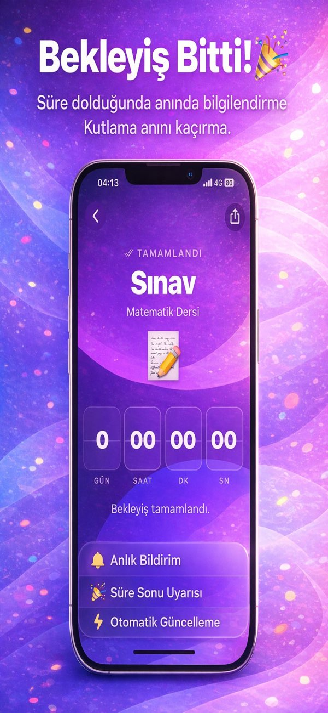
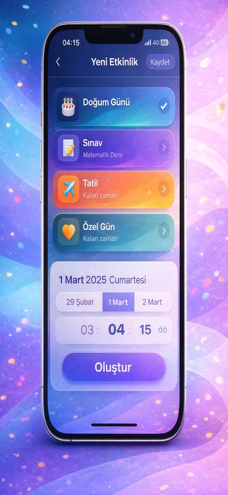
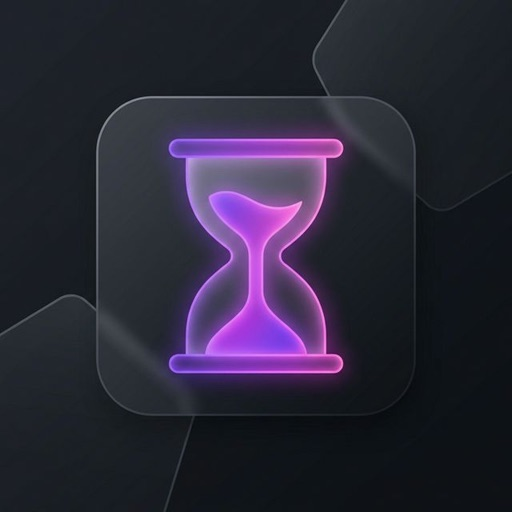
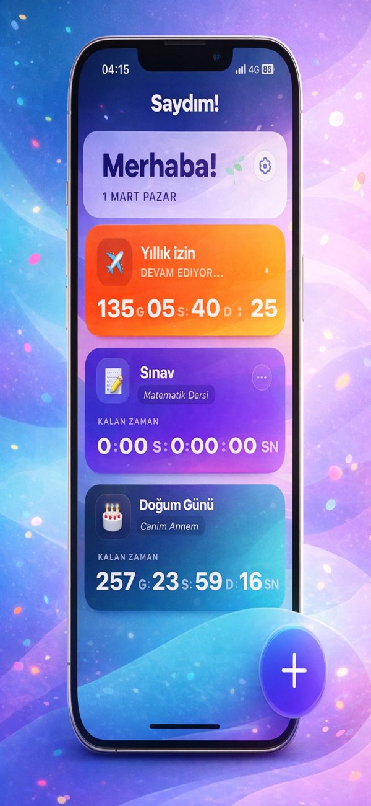

App Store'da yayında
Kategori
Utilities
Güncel Sürüm
1.4.0
İlk Yayın
4 Mart 2026
Saydım ile özel günlerini saniyesine kadar takip et.
Saydım; doğum günleri, sınavlar, tatiller ve özel anlar için saniye bazlı geri sayım oluşturan, bildirim desteği ve modern temaları tek akışta birleştiren hızlı bir planlama uygulaması.
Bu sayfadaki uygulama ikonu ve ekran görüntüleri resmi App Store sayfasından alınmıştır.



Uygulama
Saydım
Deneyim odağı
Hızlı geri sayım, renkli temalar, net hatırlatmalar
Öne Çıkanlar
Zamanı planlamayı basitleştiren üç temel parça
Saydım, dikkat dağıtmayan bir yüzeyde görünür kalan geri sayımlar ve hızlı kurulum akışıyla özel gün takibini günlük rutinin doğal bir parçasına dönüştürüyor.
Saniye bazlı takip
Gün, saat, dakika ve saniye seviyesinde canlı geri sayım sayesinde önemli anın ne kadar yakın olduğunu her an görebilirsiniz.
Modern tema kurgusu
Renkli ve ferah ekranlar, geri sayım kartlarını sadece işlevsel değil aynı zamanda keyifli bir görsel deneyime dönüştürüyor.
Hatırlatma desteği
Yaklaşan tarihler için bildirim desteği sayesinde doğum günü, sınav veya tatil planları son dakikaya kalmadan görünür kalır.
Tek uygulamada tüm önemli tarihler
Uygulamanın mağaza açıklamasındaki kullanım senaryoları; doğum günlerinden sınav takvimine, tatil planlarından kişisel dönüm noktalarına kadar uzanıyor. Saydım, bu farklı tarihler için aynı basit düzeni koruyarak karışıklığı azaltıyor.
Yakın dönemde premium temalar ve gelişmiş seçeneklerin eklenmesi planlandığı için uygulama hem bugünkü hızlı ihtiyaçlara hem de daha zengin kişiselleştirmeye açık bir temel sunuyor.
Galeri
Resmi mağaza ekran görüntüleri
Sayfanın galeri alanı doğrudan App Store'da yayınlanan güncel Saydım ekranlarını kullanır.

Önemli tarihleri dağınık notlardan çıkarın
Saydım, anı kaçırmamak isteyen kullanıcılar için hafif, hızlı ve görsel olarak temiz bir çözüm sunuyor. Uygulamayı şimdi inceleyebilir, yeni sürümler için mağaza sayfasını takip edebilirsiniz.